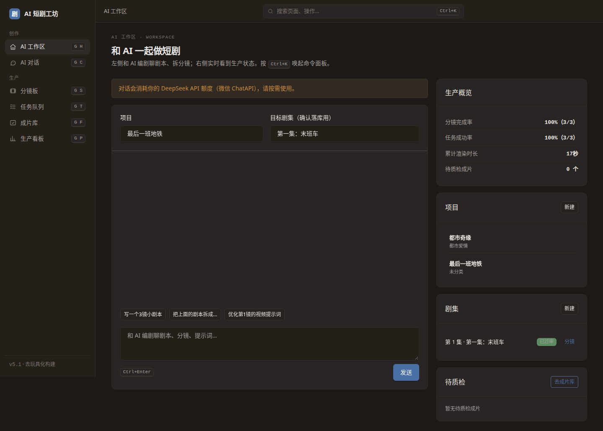
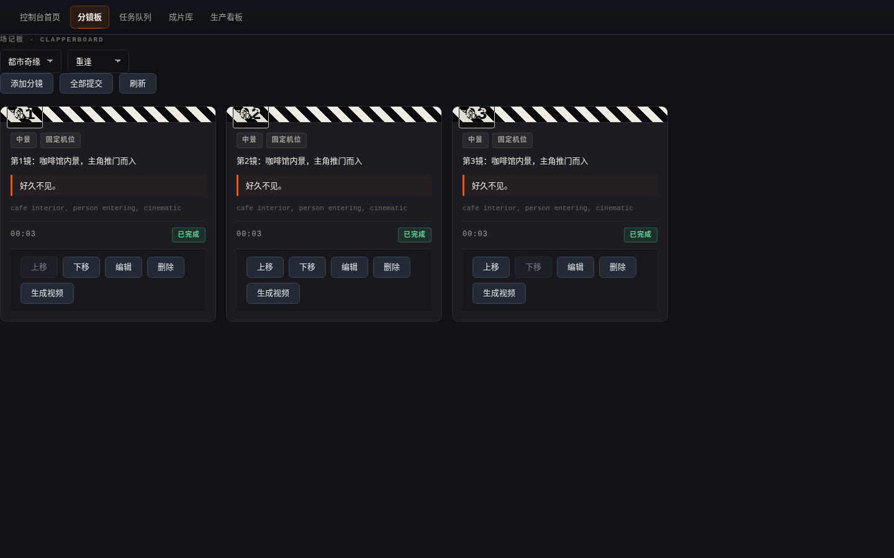
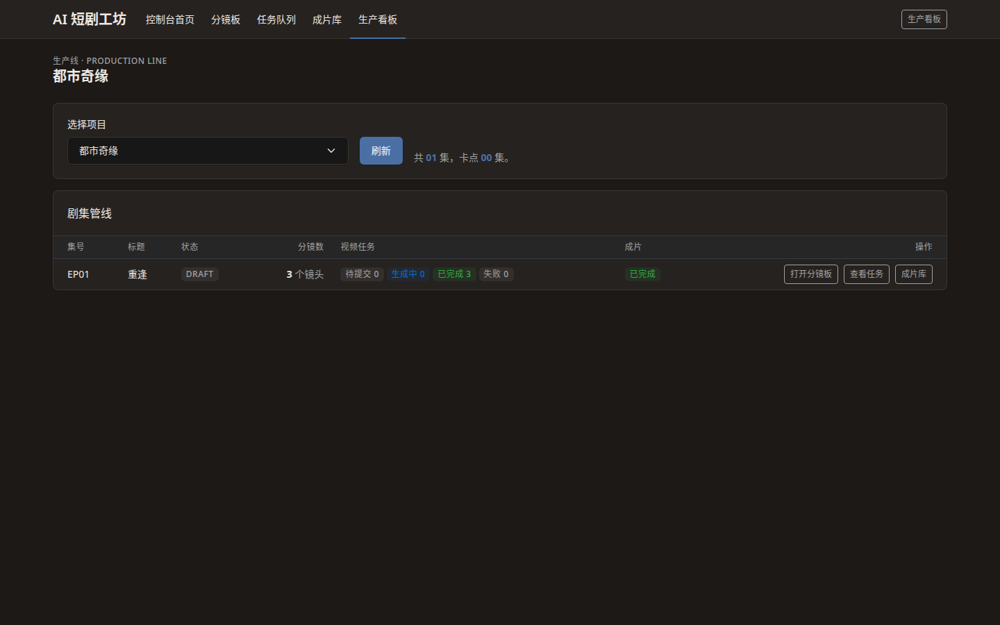
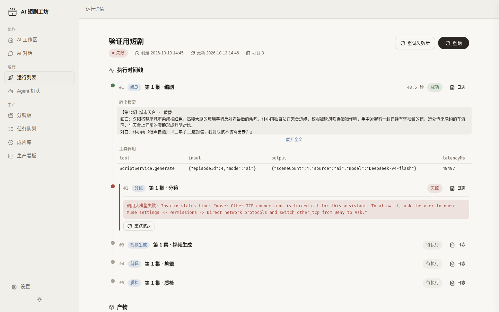
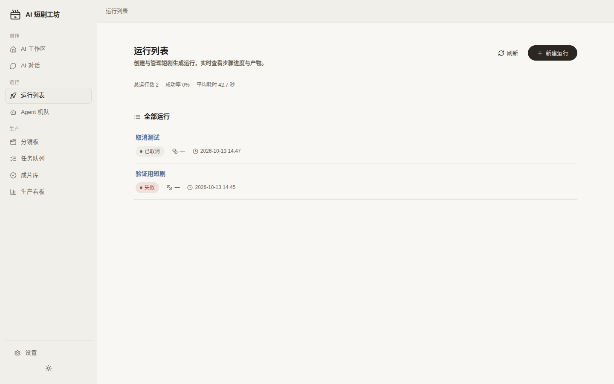

drama-factory · 短剧生产的 Harness
给一句目标，
出一部短剧。
你写一句自然语言目标，系统调度编剧、分镜、视频生成、剪辑、质检五个 Agent 依次干活。 核心是 Run 的全生命周期管理——不是看板，不是工作台。
- 技术栈
- Java 21 + Spring Boot 3 后端，自带 Web 控制台
- 视频通道
- Agnes agnes-video-2.5-flash，BYOK；也接 DashScope wan2.5 与 mock 离线演示
- 剪辑合成
- 本地 ffmpeg 输出 H.264 mp4，SRT 字幕烧录

它是怎么工作的
四步。每步都有对应的 Run 阶段，可以暂停、重试、人工审批。
-
01
目标
你输入一句自然语言目标，比如"拍一个 60 秒的悬疑短剧，主角是外卖员"。系统解析意图、时长、题材。
-
02
计划预览
编剧 Agent 产出剧本与分镜草案，生成可预览的计划。确认后才进入生产，避免浪费算力。

-
03
Agent 执行
分镜→视频生成→剪辑依次触发。生产管线可视化每一步状态、耗时、成本。失败可重试单步。

-
04
成片
ffmpeg 本地合成 H.264 mp4，SRT 字幕烧录进画面。质检 Agent 检查输出后交付。

Run 的生命周期
一次生产就是一个 Run。你管的不是一堆文件，是一个可观察、可干预的运行过程。
-
暂停 / 继续 随时冻结正在跑的 Run，改完参数接着跑。
-
取消 发现方向不对，直接停掉，不浪费后面的调用。
-
重试某一步 只重跑失败或不满意的步骤，不用整条重来。
-
人工审批 在关键节点插入确认，批准后 Agent 才继续。
-
成本统计 按 Run 和步骤记录 token 与视频生成花费。

界面截图
全部来自仓库真实截图，非效果图。
部署
一条命令起服务。详细配置见仓库 README。
终端
docker compose up默认走 mock 离线演示，不配密钥也能跑通全流程。
接真实视频生成：填 Agnes 或 DashScope 的 API Key（BYOK），在配置里切换通道。
本地需要 ffmpeg 在 PATH 中，用于剪辑与字幕烧录。
阅读 README